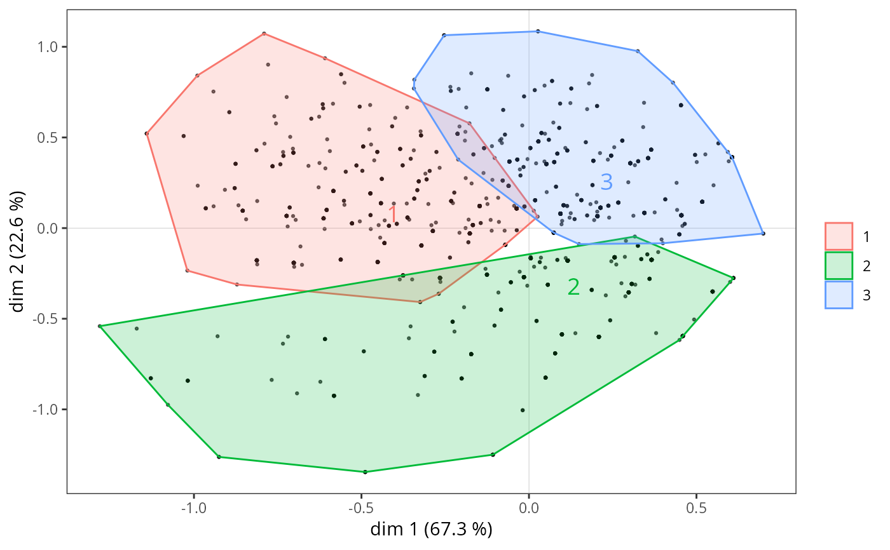

ggadd_chulls.RdAdds convex hulls for a categorical variable to a MCA cloud of individuals, using the ggplot2 framework.
ggplot object with the cloud of variables
object of class MCA, speMCA, csMCA, stMCA or multiMCA
Factor. The categorical variable used to plot ellipses.
numeric vector of indexes of the categories to plot (by default, ellipses are plotted for every categories)
numeric vector of length 2, specifying the components (axes) to plot. Default is c(1,2).
proportion of all the points to be included in the hull (default is 1).
Colors for the ellipses and labels of the categories. Can be the name of a palette from the RcolorBrewer package, 'bw' for a black and white palette (uses scale_color_grey()), a character vector of colors for a custom palette, or the name of a color for a single color. If NULL (default), the default palette of ggplot2 is used.
Numerical value from 0 to 1. Transparency of the polygon's fill. Default is O.2
Logical. Should the labels of the categories be plotted at the center of ellipses ? Default is TRUE.
Size of the labels of the categories at the center of ellipses. Default is 5.
the position of legends ("none", "left", "right", "bottom", "top", or two-element numeric vector). Default is right.
a ggplot object
Le Roux B. and Rouanet H., Multiple Correspondence Analysis, SAGE, Series: Quantitative Applications in the Social Sciences, Volume 163, CA:Thousand Oaks (2010).
Le Roux B. and Rouanet H., Geometric Data Analysis: From Correspondence Analysis to Stuctured Data Analysis, Kluwer Academic Publishers, Dordrecht (June 2004).
## Performs a specific MCA on 'Taste' example data set
## ignoring every 'NA' (i.e. 'not available') categories,
## then performs hierarchical clustering and
## partitions the individuals into 3 clusters,
## draws the cloud of individuals
## and adds convex hulls for the clusters.
data(Taste)
getindexcat(Taste)
#> [1] "FrenchPop.No" "FrenchPop.Yes" "FrenchPop.NA" "Rap.No"
#> [5] "Rap.Yes" "Rap.NA" "Rock.No" "Rock.Yes"
#> [9] "Rock.NA" "Jazz.No" "Jazz.Yes" "Jazz.NA"
#> [13] "Classical.No" "Classical.Yes" "Classical.NA" "Comedy.No"
#> [17] "Comedy.Yes" "Comedy.NA" "Crime.No" "Crime.Yes"
#> [21] "Crime.NA" "Animation.No" "Animation.Yes" "Animation.NA"
#> [25] "SciFi.No" "SciFi.Yes" "SciFi.NA" "Love.No"
#> [29] "Love.Yes" "Love.NA" "Musical.No" "Musical.Yes"
#> [33] "Musical.NA" "Gender.Men" "Gender.Women" "Age.15-24"
#> [37] "Age.25-49" "Age.50+" "Educ.None" "Educ.Low"
#> [41] "Educ.Medium" "Educ.High"
mca <- speMCA(Taste[,1:11],excl=c(3,6,9,12,15,18,21,24,27,30,33))
d <- dist(mca$ind$coord[,c(1,2)])
hca <- hclust(d, "ward.D2")
cluster <- factor(cutree(hca, 3))
p <- ggcloud_indiv(mca, col='black')
ggadd_chulls(p, mca, cluster)
